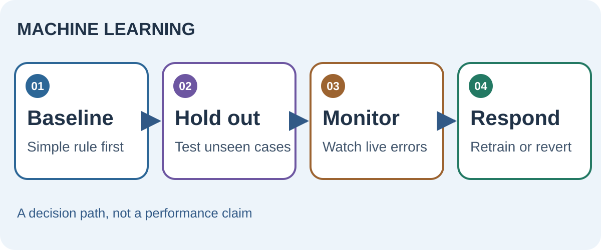
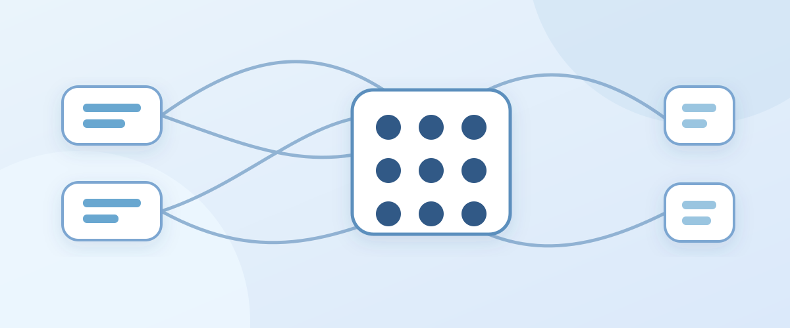
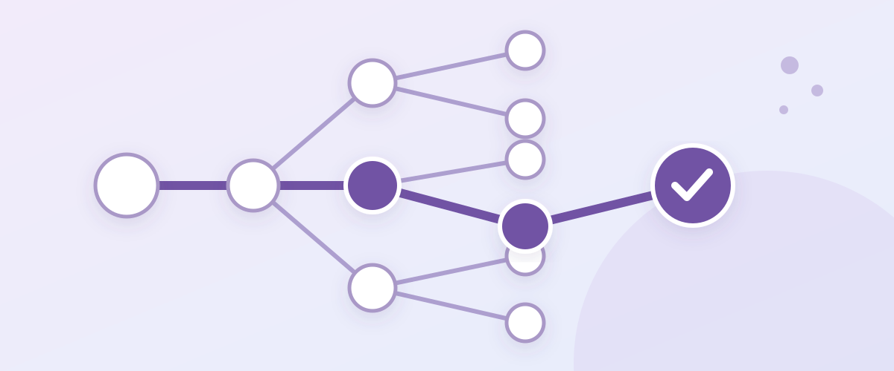
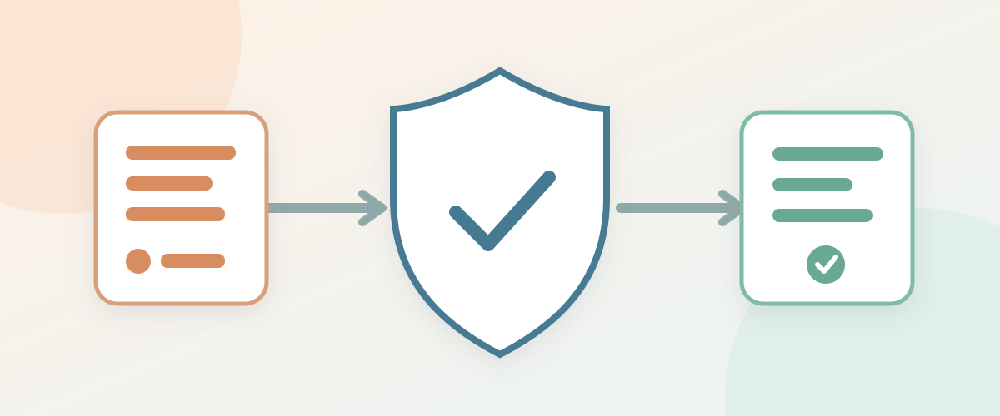
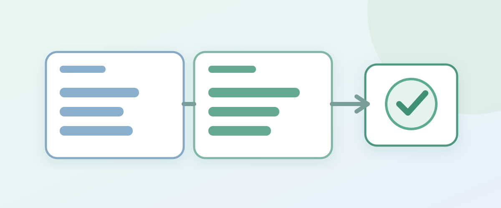
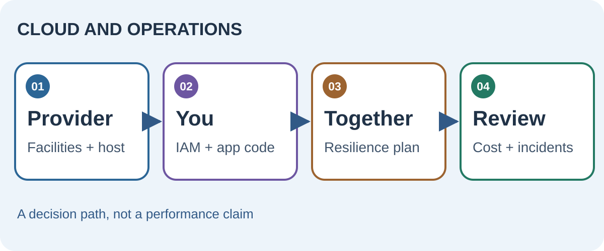

Machine learning
When an ML model is ready for production
A strong validation score is a start. Deployment needs a baseline, leakage checks and a plan for changing data.
Read the guide →Research notes · Systems and decisions
Concise guides to understanding models, building reliable systems and deciding under uncertainty. Each guide has a worked example, a visual and links to its primary sources.
Follow one topic or move across the branches as a project grows.
No matching guides or sources. Try a broader term.
Start with baselines, data quality and a test that resembles deployment.

A strong validation score is a start. Deployment needs a baseline, leakage checks and a plan for changing data.
Read the guide →Understand model behavior, then decide when search, autonomy and evaluation help.

Separate learned weights, task context and verification before trying to fix a weak answer.
Read the guide →
Choose the smallest control loop that improves validated outcomes, and be explicit about what branches.
Read the guide →
Let models propose actions while independent controls decide which effects are allowed.
Read the guide →
Compare a strong simple baseline with an agent under the same conditions, then inspect outcomes and costs.
Read the guide →Keep source records trustworthy and make answers traceable.

A good answer needs a trustworthy record, a search method suited to the question and a path back to the source.
Read the guide →Locate durable state and design for retries and uncertain outcomes.

Draw the line where state is committed, work is handed off and failures can be retried safely.
Read the guide →Decide what a provider operates and what your team must still prove.

Managed infrastructure removes some work, but ownership of data, access, recovery and cost still needs a name.
Read the guide →Use evidence, time horizon and risk to make choices you can revisit.

A good process records what was known, what was assumed and what would change your mind.
Read the guide →
Time helps only when a plan can survive its cash needs, costs and the investor’s own behavior.
Read the guide →A small shelf of sources that change a design decision. The notes say why to open each one and what it does not establish.
The original attention and Transformer architecture. Start with Figures 1–2; remember that today's decoder-only models are not identical.
A practical vocabulary for workflows, routing, parallelism and agents. Useful before choosing a multi-agent framework.
A clear example of branching at intermediate reasoning steps. Its experimental gains are task- and setup-specific.
Explores heterogeneous-model planning inside MCTS. Read its benchmarks with the model pool and search budget in view.
A threat catalogue for lower-trust instructions entering an LLM workflow. Pair each threat with an enforceable control.
A practical account of task, environment and grader design. Useful when a fluent trace masks a failed outcome.